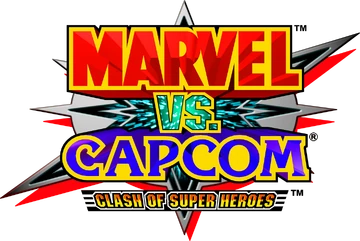

The True Beginning: 
The timelines collide and the worlds of MARVEL AND CAPCOM
bring you the NEW AGE OF HEROES.
PREPARE YOUR ALTER EGOS, this is GONNA TAKE YOU FOR A
RIDE!
GET READY FIGHTERS!
While it may not be the first chronological game in the franchise,
being beat by "X-MEN: CHILDREN OF THE ATOM", "MARVEL SUPER HEROES", "X-MEN VS STREET FIGHTER", and
"MARVEL SUPER HEROES VS STREET FIGHTER", Marvel vs Capcom is the true spiritual beginning of collab
fighters.
After the success of previous collaborative projects with Marvel, Capcom decided that they were finally
done warming up, and opened the world's eyes to the potential of collab fighters with "Marvel vs Capcom:
Clash of Super Heroes". And with it, the borders within the multiverse shattered forever.
Marking the first genre-redefining game in the franchise, Capcom hit the ground
running with Icons from both sides in a roster of 16 legends: Chun-li, Ryu, Zangief, Morrigan, Captain
Commando, Mega Man, Roll, Strider Hiryu, Spider-Man, Jin, Captain America, Venom, Hulk, Gambit,
Wolverine, and War Machine (Iron Man couldn't be used due to rights issues, so they recolored his old
sprites to match War Machine and deepened the voice lines)
Laying the ground work for the rest of the franchise, Marvel vs Capcom refined the
assist and ally swap mechanics previously introduced in Marvel Super Heroes vs Street Fighter.
With nowhere to go but up, Capcom absolutely destroyed expectations with Marvel vs
Capcom 2: New Age of Heroes. MVC2 introduced variability if nothing else, three selectable assists for
each character on your team, three characters to a team instead of two, to make each match even more
thrilling, extended super meters, and a combo system that was so defining to the fighting game genre,
that no one has done it better since, literally! This game is still played in international live
championships to this day!
The gameplay wasn't the only thing fortunate enough to change, the roster scale
did too! Shifting from a measly 16 to a galactic 56 fighter roster, the community found themselves with
a scale of variability and freedom that they've never seen before, as if the multiverse was truly opened
for the player.
This massive scale gave Marvel vs Capcom an air of greatnes that every
installation in the franchise has been trying to reach since.
MVC TIMELINE
In December 1994, Marvel and Capcom collaborated for the first time, with Marvel seeking
popularity in Japan and Capcom aiming to dominate the U.S. fighting game market. This led to X-Men:
Children of the Atom, inspired by the "Asteroid M" storyline, followed in 1995 by Marvel Super Heroes,
based on the "Infinity Gauntlet" storyline.
In 1996, Capcom created the first tag fighter of
the franchise. In it, Ryu and Cyclops (famously) shake hands for the first of many times in the
franchise.
But Capcom decided the two worlds must meet yet again, leading to the release of
Marvel
Super
Heroes vs Street Fighter in 1997.
In November 15th, 2011, the world was introduced to Marvel cs Capcom 3: The Fate of Two
Worlds was born.
This game is a rapid-paced legend among legends, still played to this
day
at
EVO
championships!
Unfortunately, this beautiful franchise has had a less than graceful landing. in 2017,
Capcom lovelessly spat out Marvel vs Capcom: Infinite.
This game was tragic. A tiny roster
locked behind DLC paywalls, a disappointing 2 character gameplay loop, lame forced MCU-style graphics,
and NO X-MEN due to rights issues. This game was all but dead on arrival. Tragic.